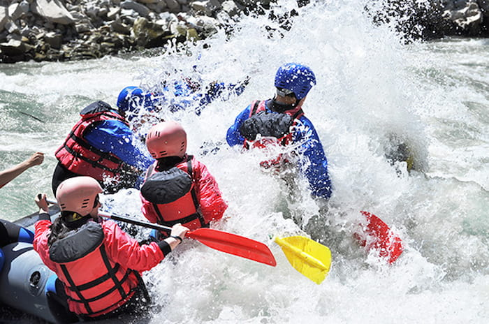
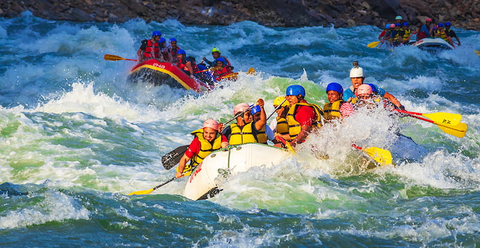
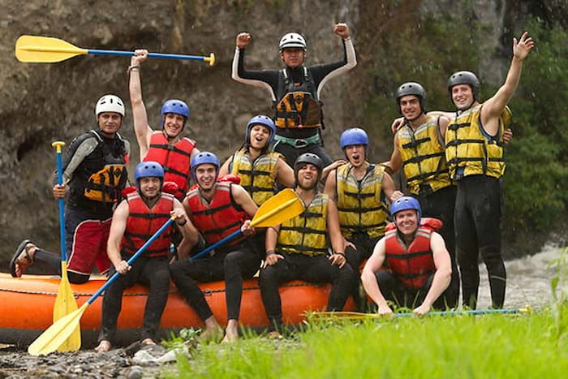
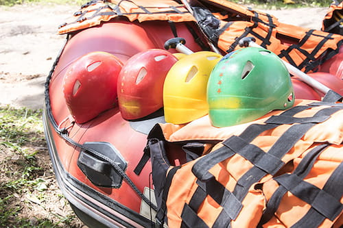

Missão
Oferecer aventuras emocionantes em rios e corredeiras com qualidade, segurança e respeito ao meio ambiente, criando momentos únicos para nossos clientes.



Oferecer aventuras emocionantes em rios e corredeiras com qualidade, segurança e respeito ao meio ambiente, criando momentos únicos para nossos clientes.
A Rio Bravo Rafting nasceu do sonho de um grupo de amigos apaixonados por aventura, natureza e esportes radicais. Durante várias viagens por rios e corredeiras, eles perceberam que muitas pessoas desejavam viver essa emoção, mas com segurança e orientação profissional. Foi então que decidiram criar uma empresa dedicada ao turismo de aventura, oferecendo experiências inesquecíveis de rafting para famílias, amigos e turistas.

Desde o início, a Rio Bravo Rafting teve como principal objetivo unir adrenalina, diversão e respeito ao meio ambiente. Com o passar do tempo, a empresa conquistou a confiança de seus clientes graças ao atendimento de qualidade, equipes treinadas e roteiros emocionantes em meio às belas paisagens naturais. Hoje, a Rio Bravo Rafting é reconhecida por proporcionar aventuras cheias de emoção, espírito de equipe e contato com a natureza, sempre seguindo o lema: “Aventura sem limites!”


